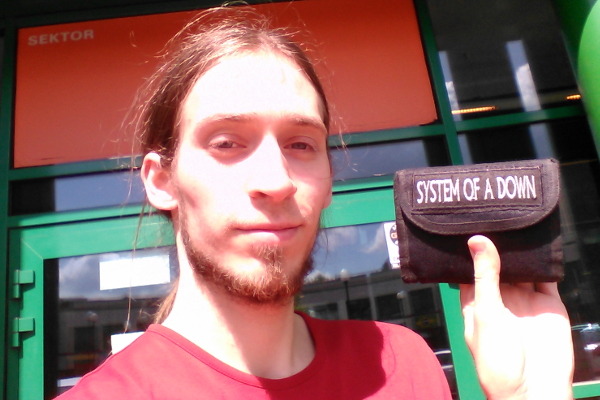
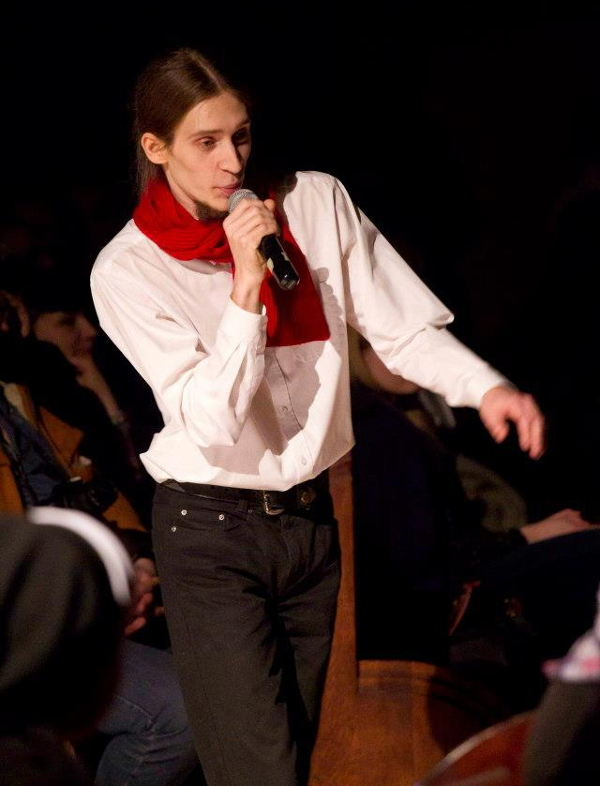
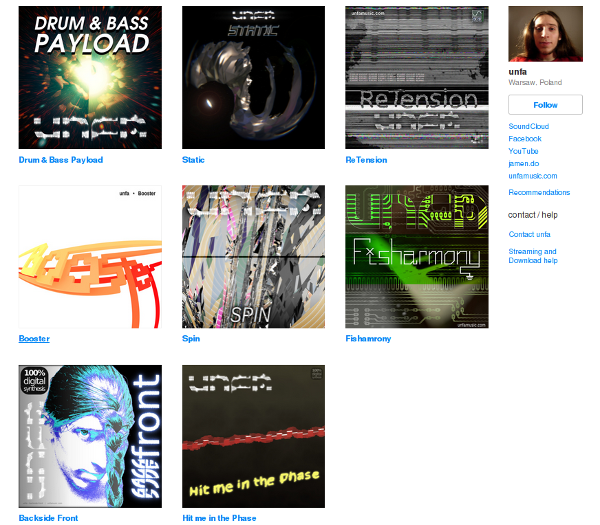
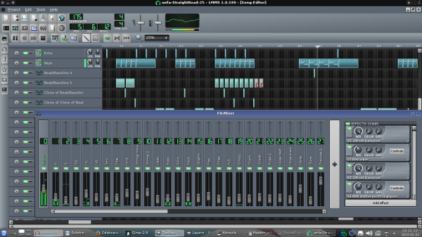
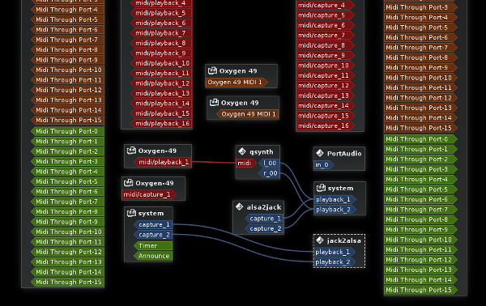
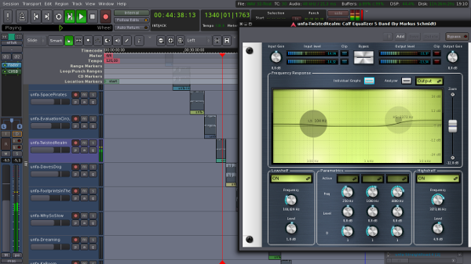

LMP Asks #10: An interview with Tobiasz Karoń, aka Unfa
This month we talk to Tobiasz Karoń, better known online as Unfa. Tobiasz's passion is electronic music and open source software. He creates music using GNU/Linux based systems and is a massive fan of ZynAddSubFX. His favourite distro is KXStudio and his favourite DAWs are LMMS and Ardour. LMMS for sequencing and synthesizing, Ardour for recording, editing and mastering.

Hi Tobiasz and thank you for taking the time to do the interview. Where do you live, and what do you do for a living?
I live in Warsaw, Poland and I work as a graphic designer in a small local company. I also make some music and sound design for video games for mobile platforms.
What is your musical background?
I started messing around with computer music around 2004 using FL Studio 5. I knew nothing about music theory at that time, I just had fun making simple compositions.
Around that time I also started singing inspired by System of a Down's vocal harmonies. Around 2011 I started serving with my voice in a local church group. Around 2012 I joined the Choir of Warsaw Medical University as baritone/bass.

Unfa is a big fan of System of a Down. Can you tell?
I also was playing as a drummer and messing around with electric guitar. Since my early years I dreamed about a keyboard – I was staring at the shiny Casio workstations with floppy disk drives exposed in stores. In April 2015 I finally started following that dream – I bought a MIDI controller keyboard and in May 2015 I started attending individual piano lessons. I'm also writing songs and some poetry.
My main instrument is my voice – singing, rapping, screaming, scatting, beatboxing, playing mouth-saxophone and voice acting. A good showcase are three tracks from my album “Static”: “Beepson Junior”, “I gotta tell you something” and “Not The End”.
One of my long-term goals is to prove that open source software is capable of producing top quality music, that can achieve commercial success just like the music created with closed-source, proprietary software. I had some success in this field, I sold a bunch (20? 30?) of CD's after a premiere concert for the “Static” album. It was “name your price” and I was surprised of how much cash I got in the end. The buyers all waited for an autograph and were very positive about the event.

Unfa performing live in a local church during a Christmas event
The only thing I didn't like about all this was my sore throat. I screamed much too much. This made me think a lot about what may destroy my voice and if I want to carry on performing this way. I knew I don't. I now scream sporadically and I don't want to make my music rely on this type of performance. Some vocalists seem to be scream-proof (Mike Patton, Robert “Litza” Friedrich) but I don't seem to be one of them. However I value screaming as an extremely powerful musical device when used sparingly and carefully.
Tell us a bit about your releases to date?
To this day I've released 4 longplays of electronic music, 3 made with LMMS, ZynAddSubFX and Ardour.

Unfa's 3 longplay releases along with 5 singles. Unfa designs his cover images himself.
There's one longplay that isn't listed above, it's called Jooze (availabile on Last.fm) and it's a work that I don't promote, because I used other people's drum samples, which I don't do any more, as I synthesize all sound by myself. This is my first ever longplay released. I mastered this in Audacity, all tracks are made with MODPLug Tracker (OpenMPT) using various free VSTs and VSTis. I made this on Windows XP system, before I switched to Linux.
There's also an industrial-ambient soundtrack mini-album (EP?) called The Zone that I wasn't able to upload to Bandcamp due to some technical issues, but it's availabile on Jamendo and YouTube. The Zone is a very recent production (published 4th of may 2015), made with LMMS and ZynAddSubFX entirely on Linux. I was asked to make a soundtrack for a YouTube channel dedicated to S.T.A.L.K.E.R gameplays. After it was done I decided to publish it under a creative commons license.
"Spoken" from album "Static" is my most recognized song. It was included in LMMS demo songs (minus the vocal sample) and was promoted on it's main page for over a year.
Are there any other projects you are working on at the moment?
I'm currently working on a collaboration with Combustible Lemonade. We're making a little album together. The inspirations include classical music, jazz, progressive rock, and various flavours of EDM like drum&bass. It's gonna be crazy. Combustible Lemonade is mostly responisble for the composition, I'm doing the sound design. We're very excited about this project. I hope we'll be able to tell some more soon.
Also there's a very recent video of me performing solo with the Choir of Warsaw Medical University. I won't tell you more, because it's a surprise.
What is your typical workflow when making music?
The unique aspect of my workflow is that I don't use any drum samples (with a few exceptions) or other people's presets. I synthesize all sounds from scratch with ZynAddSubFX. It took me a few years to develop a satisfying drum sound. I don't say that samples are bad. But that's easy and unoriginal. Early on I decided I want to develop a recognizable sound, and the synthesizers are one way of achieving that.
I learned to use the mouse and piano roll tandem to transfer my musical ideas into LMMS. Also my work was completely done by intuition, “by ear” as I didn't receive formal music training. I often start with a beat. Kick, snare, hihat. Sometimes I start a track humming a lead or bass line, putting it quickly into the sequencer and working around that.

Since april 2015 I started practising a new way. I try to start my work by laying down a chord progression, and build the bass and lead lines on top of that. Combustible Lemonade teaches me a bit about harmony and I'm trying to incorporate that.
I very like distortion as a tool to make my synths more aggressive, harsh, analogue-like and rich. I frequently use a few types of distortion, I filter that, pan it left and right and mix in a small amount of that distorted and filtered signal with the dry original. ZynAddSubFX's distortion unit is fantastic for this, it's very easy and time-efficient for setting up such effects.
Also I frequently layer a few slightly different versions of one synth, panning them around, detuning slightly, filtering and blending them together. This is where ZynAddSubFX shows it's power – I can layer 8 voices very easily with it, or layer 30, technically the sky (and the CPU) is the limit.
One instance of ZynAddSubFX can synthesize an entire track. It has 16 parts (one for each MIDI channel) each part has 3 effect slots, plus there are 4 global send effects and 8 insert effect to use for a single part or master channel. If you want to learn more, here's a video to watch.
What tools would you suggest to newcomers who are into your specific genre of music?
If you've started you musical journey with FL Studio (like me), you should feel comfortable with LMMS, as it is similar in design. It lacks some functionality and has bugs (like everything), but it can let you make great sequenced music.
If you like synthesizers, want to use your old VSTi collection or just drop in some samples and make a beat - go ahead and try it :) You can also download my projects (as I synthesise all stuff, you might need some extra plugins, but no samples) and tear them apart, I really like learning new software this way.
When it comes to recording songs, LMMS is not enough though. I did my older stuff with Audacity, but it's not really designed for music production, it's for general sound editing and works great in that field. If you're into recording vocals or live instruments, or combining this with sequenced electronic stuff - or even scoring a movie - Ardour is gonna make you happy. If you go for Ardour 4 (available from KXStudio repositories) you don't need to setup JACK and can go with pure ALSA. If you're lost, I advise reading the manual.
MIDI plays a big part in your workflow. What kind of improvements would you like to see in MIDI on Linux?
Actually it should have, but 99% of my discography was done entirely with a mouse.
I used to live in a cave - you know - spending hours and hours alone clicking music out of my mind into the computer. There are just a few tracks that contain material I actually played on a keyboard (Hammond solo in "Spin" for instance - it's a trick recording I performed that in 4 times slower tempo, so it's a cheat anyway, also I used an AKAI MPK mini).
Now I'm leaving the cave and slowly preparing myself for the stages, so reliable live MIDI processing is starting to get important just like the daily piano practice. My current plan is to use Ardour 4 for realtime audio routing, processing and effect control plus x42 MIDI filter plugins to filter the signals and drive multiple virtual instruments with one m-audio Oxygen 49 (MKIV) MIDI keyboard controller.
Anyway, I can't understand the thing with JACK-MIDI and ALSA-MIDI. In Catia (an audio & MIDI patchbay program) I can have green, red and even orange MIDI ports. I never know what is what, I just remember the red likes the orange and hates the green.

An example of Unfa's connections as seen in Catia. Note the red, orange and green MIDI ports.
Also the JACK-ALSA MIDI bridge fails me regularly - I don't quite feel like playing anything fancy live with that right now. I even thought my new MIDI keyboard is broken, but MIDI Snoop has proven me wrong. So I'd like some clean up in this field, simplifying things, making MIDI signals universally understood across all Linux audio processes, just like SIGKILL is.
Tell us a bit about your hardware set up
My main sound recording device is Zoom H2. I chose it, as it was a highly portable and economic all-in-one sound capture device that I'm using for field recording, line recording of live events or electric instruments, and as a stereo home-studio microphone. I've recorded tens of hours of podcasts, many songs, hundreds of gigabytes of sounds, rehearsals, concerts, events, talks... It's 5-6 years old now. it's durable and has a satisfying sound quality for the price. I was thinking about getting Zoom H2n, but I decided that the old one is still fine and I don't need a new recorder. I'll probably get a XLR-enabled 24-bit USB sound interface in the future.
I used to work on a 15" ASUS K52Jc laptop with Intel i5 processor and 8GB or RAM. Recently I switched to a Dell Lattitude 3550 shipped with Ubuntu 14.04 LTS with i7, 8GB of RAM and 1TB disk drive, FHD display (lots of pixels!). Since 2011 I work on laptops and can't imagine myself confined to one desk right now.
I got an AKAI MPK mini MKI keyboard controller around 2012, but a friend of mine was right about it when he said: “you need a bigger keyboard”.
Since I'm always working with headphones, the first serious purchase in the field were Denon AH-D301. I bought them around 2008. I had to resolder the wires inside one headphone, I turned the muffs inside out and added dampeners made from scotch, because the rig was making clapping noises when I was walking quickly wearing the headphones.
I switched to Superlux HD-660 in 2014, a cheap imitation of Beyerdynamic DT 770. However they sound very good for their price and are quite comfortable.
Proper studio monitors were way to expensive for me most of my life, but I'm now saving for a pair of Behringer NEKKST K8. I guess the collaborative project with Combustible Lemonade will be mixed and mastered with them.
The most recently purchased hardware I own (excluding the new Dell laptop) is the M-Audio Oxygen 49 MKIV USB MIDI controller keyboard. I chose it for it's big potential for live performance and versatility.
What is your history with Linux?
I started using GNU/Linux around 2008. I think my first distribution was Ubuntu 8.04. I was dual-booting Window XP for a few months, before I switched completely to GNU/Linux. After that I became a distro vagabond. I used Ubuntu Studio, Crunchbang Linux, Debian, Gentoo, 64 Studio, Linux Mint, AV Linux, ArtistX and KXStudio. I used to change the distribution every time something broke and I wasn't able to fix it (it has to work elsewhere!).
After a few years of more and more desperate searching for an unbreakable distribution I settled down with KXStudio. I realized that my attitude is wrong and I'm not helping to make things better. So instead of reinstalling my system as an ultimate fix, I started reporting bugs and providing feedback to developers. As for KXStudio that I'm using for a year now - I value it's powerful and convenient KDE desktop, fantastic set of cutting-edge tools available through it's own repositories, good support and custom applications that are developed for it.
Why do you feel open source is important, and what for you is the most important aspect of Linux audio?
I believe open source is the future of all computing. It's the Gospel of software, the good news, the freedom and joy of serving each other without demanding a pay. I think our global mentality as software users is slowly changing from “I pay therefore I demand” to “I value therefore I support”. I think very interesting things will emerge as this mentality spreads – Blender seems to be the biggest self-funding open source project that's showing new possibilities for other FLOSS projects.
I personally use Blender and Inkscape every day in my regular job and in 2015 I also started supporting the projects I use with small donations from time to time (LMMS, Ardour, Blender, KXStudio, Calf).
What do you feel is currently lacking in Linux audio?
A linear phase EQ plugin.
What is your favourite FLOSS plugin?
For instruments it's ZynAddSubFX. It's capable of 95% of what I need, and it's very convenient to use for creating complex, layered sounds with lots of motion, effects and detail. It's like 100 plugins in one, packed in a slick box.
For effect processors, I extremely value Calf plugin suite. These are top notch and I think the Linux audio community can show them with pride.
Are there any FLOSS projects that you are excited about at the moment?
Ardour 4. It's a fabulous project. I think Paul Davis is the father of Linux pro audio and without JACK and Ardour, there'd be little room for serious studio work on Linux.

Unfa mastering his songs in Ardour
Also LMMS is developing nicely, it's made great progress in last year (I made some contribution to that) and I can't wait to see what comes next.
What resources have your found most useful on your Linux audio journey?
It's hard to point something discrete, because that was (and still is) a broadband ocean of resources. I really like using Synaptic (a popular graphical package manager) to search for tools I need to get something done, or just putting in random tags and looking for interesting titles or descriptions. I've discovered a lot of great software by having fun with it's quick filter.
Also the forums at linuxmusicians.com are a great place to hang out, ask and share the love. There's also an Open source Musician's Podcast. I think all that can help people who are new to Linux audio to discover the power and get going. Be free and rock out!
What changes, if any, would you like to see within the Linux Audio community?
I'm personally concerned about software crashes and data loss. I feel desktop computers generally work better with GNU/Linux systems and applications. I'd like to draw more attention to stability, crash recovery, backups, autosave, and making software catastrophe-resistant.
Why? Because that's what it takes to allow live performance with open source software. If something crashes every two hours, you won't be playing a concert with it. And live gigs are the biggest source of income for musicians. Happy musicians will donate more money to the software they use. Extrapolating this formula means open source projects can pay programmers to work full-time on the software. This is the revolution I'm expecting. Blender has already proven this is feasible.
Chaos Chimp is a plugin that might be helpful for Linux audio developers – it deliberately causes trouble so you can prepare your software for that eventuality.
What advise would you give to a new Linux Audio user?
Take your time to explore the tools. Once you have your favourites - start supporting them.. Report problems, get to know the people who create the software, use your talents to push it forward. Next generations will bless you for doing so.
Also if you have any trouble or questions, feel free to e-mail me (unfa@unfamusic.com), I'll do my best to help you get on your feet. We're all brothers in open source :)